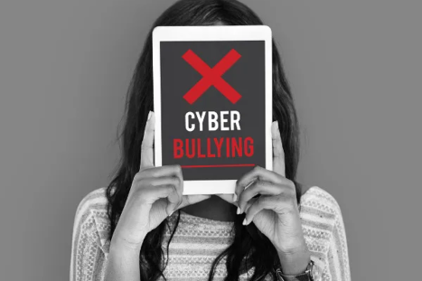
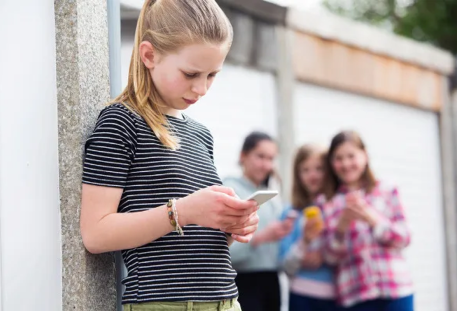

Cyberbullying
Cyberbullying é um termo da língua inglesa utilizado para caracterizar a prática agressiva de intimidações e perseguições no ambiente virtual.
O cyberbullying é a prática da intimidação, humilhação, exposição vexatória, perseguição, calúnia e difamação por meio de ambientes virtuais, como redes sociais, e-mail e aplicativos de mensagens. A incidência maior de casos de cyberbullying ocorre entre os adolescentes, porém há um número considerável de jovens adultos que utilizam essa prática criminosa.
O que é Cyberbullying?
O bullying é uma forma de agressão física, verbal e psicológica que se mostra sistemática e contínua, fazendo com que um indivíduo ou um grupo ataque sistematicamente uma vítima com base em sua aparência ou no seu comportamento, que em geral não está enquadrado no padrão de normalidade estabelecido pelo grupo social. O cyberbullying, por sua vez, é a extensão da prática do bullying do ambiente físico para o plano virtual.
Enquanto o bullying entre adolescentes é largamente praticado no ambiente escolar, o cyberbullying ultrapassa qualquer fronteira física, tirando da vítima qualquer possibilidade de escapar dos ataques, que acontecem o tempo todo por meio, principalmente, das redes sociais e dos aplicativos de mensagens.
Podem ser consideradas cyberbullying ações como:
- exposição de fotografias ou montagens constragedoras
- divulgação de fotografias íntimas
- críticas à aparência física, à opinião e ao comportamento social de indivíduos respectivamente.
Os agressores geralmente usam de perfis falsos (fakes), acreditando estarem totalmente protegidos quanto à sua identidade real, ou simplesmente se manifestam pelo meio virtual por não ter que encarar a sua vítima pessoalmente.
Práticas do Cyberbullying
- Hater: São pessoas que disseminam o ódio no ambiente virtual, atacam outras pessoas com ofensas e humilhações, de forma sistemática.
- Sexting: Consiste na troca de mensagens de cunho sexual, podendo ou não conter imagens de nudez das pessoas envolvidas. Quando há essa troca de imagens, o sexting pode tornar-se perigoso, pois pode ser divulgado por aquele que recebeu as imagens, ou hackers podem invadir os aparelhos e divulgarem o conteúdo.
- Revenge porn: Diz respeito ao ato de divulgar imagens eróticas e de nudez de uma pessoa que enviou à outra confiando em sua índole, mas que as divulga como forma de vingança e punição.
Consequências do Cyberbullying
Assim como ocorre com o bullying praticado fora do ambiente virtual, o cyberbullying pode ter sérias consequências para os jovens vitimados. Em geral, um quadro inicial de isolamento e tristeza pode evoluir para sérios quadros de depressão, transtorno de ansiedadee síndrome do pânico.
Se o caso não for descoberto e as sequelas não forem tratadas, as vítimas de cyberbullying podem carregar consigo sintomas de trauma pelo resto de suas vidas, o que provoca, muitas vezes, baixo desempenho escolar, baixa autoestima, dificuldades em se relacionar com os outros e se colocar no mercado de trabalho quando na vida adulta, além de problemas da busca de alívio dos problemas nas drogas e no álcool. Nos casos mais extremos, a vítima de cyberbullying pode cometer suicídio.
Quais atitudes você deve ter para evitar que seja vítima de Cyberbullying
- Não expor muito a sua vida nas redes sociais
- Evitar a exposição de intimidades na internet
- Quando for atacado por alguém, bloquear essa pessoa
- Não enviar fotos íntimas, contendo nudez parcial ou total, para outras pessoas, mesmo que seja seu/sua parceiro/parceira e que confie nessa pessoa
- Em caso de exposição de fotos íntimas na rede, procurar uma delegacia de polícia para registrar imediatamente um boletim de ocorrência
- Em caso de agressões que possam causar danos morais por injúria, calúnia e difamação, procurar uma delegacia de polícia e registrar um boletim de ocorrência
- Se for vitimado por alguma agressão, antes de tomar qualquer atitude, converse com seus responsáveis ou algum adulto de sua confiança que possa te apoiar e te auxiliar
- Pais, mães e responsáveis devem sempre monitorar o que os menores fazem na internet, a fim de auxiliá-los quando sofrerem agressões ou coibirem possíveis atos agressivos praticados por eles